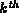

Data Structures and Algorithms
with Object-Oriented Design Patterns in Java
Data Structures and Algorithms
with Object-Oriented Design Patterns in JavaThe average case analysis of open addressing is easy if we ignore the primary clustering phenomenon. Given a scatter table of size M that contains n items, we assume that each of the combinations of n occupied and (m-n) empty scatter table entries is equally likely. This is the so-called uniform hashing model .
In this model we assume that the entries will either be
occupied or empty, i.e., the deleted state is not used.
Suppose a search for an empty cell requires exactly i probes.
Then the first i-1 positions probed must have been occupied
and the  position probed was empty.
Consider the i cells which were probed.
The number of combinations in which i-1 of the probed cells are occupied
and one is empty is .
Therefore, the probability that exactly i probes are required is
position probed was empty.
Consider the i cells which were probed.
The number of combinations in which i-1 of the probed cells are occupied
and one is empty is .
Therefore, the probability that exactly i probes are required is
The average number of probes required to find an empty cell in a table which has n occupied cells is U(n) where
Using Equation  into Equation
and simplifying the result gives
into Equation
and simplifying the result gives
This result is actually quite intuitive.
The load factor,  , is the fraction of occupied entries.
Therefore, entries are empty
so we would expect to have to probe entries
before finding an empty one!
For example, if the load factor is 0.75,
a quarter of the entries are empty.
Therefore, we expect to have to probe four entries before finding an empty one.
, is the fraction of occupied entries.
Therefore, entries are empty
so we would expect to have to probe entries
before finding an empty one!
For example, if the load factor is 0.75,
a quarter of the entries are empty.
Therefore, we expect to have to probe four entries before finding an empty one.
To calculate the average number of probes for a successful search
we make the observation that when an item is initially inserted,
we need to find an empty cell in which to place it.
For example, the number of probes to find the empty position into which
the  item is to be placed is U(i).
And this is exactly the number of probes it takes
to find the
item is to be placed is U(i).
And this is exactly the number of probes it takes
to find the  item again!
Therefore, the average number of probes required for a successful search
in a table which has n occupied cells is S(n) where
item again!
Therefore, the average number of probes required for a successful search
in a table which has n occupied cells is S(n) where
Substituting Equation in Equation
and simplifying gives
where is the  harmonic number
(see Section ).
Again, there is an easy intuitive derivation for this result.
We can use a simple integral to calculate the mean number of probes
for a successful search using the approximation as follows
Empirical evidence has shown that the formulas derived for the uniform hashing model characterize the performance of scatter tables using open addressing with quadratic probing and double hashing quite well. However, they do not capture the effect of primary clustering which occurs when linear probing is used. Knuth has shown that when primary clustering is taking into account, the number of probes required to locate an empty cell is
and the number of probes required for a successful search is
The graph in Figure
compares the predictions of the uniform hashing model
(Equations and )
with the formulas derived by Knuth
(Equations and ).
Clearly, while the results are qualitatively similar,
the formulas are in agreement for small load factors
and they diverge as the load factor increases.
Figure: Number of probes vs. load factor for uniform hashing and linear probing.
 Copyright © 1998 by Bruno R. Preiss, P.Eng. All rights reserved.
Copyright © 1998 by Bruno R. Preiss, P.Eng. All rights reserved.